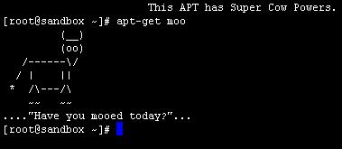

Building a highly secure, cheap secondary backup from scratch
Using Banana PI
András Rutkai
Motivation
I needed a place where I can store my backups
Geographically somewhere else than my main server
As cheap as possible
Highly secure
At least 3-4 M/s throughput
Low power consumption
Alternatives
USB HDD + manual backup
NAS
Cloud
Raspberry PI
The hardware

Why Banana PI?
1 GHZ CPU (2 cores)
1 GB memory
Gigabit ethernet
SATA port
Separate buses
Acquiring the parts
E-bay + DealExtreme
| Part | Specs | Price |
|---|---|---|
| Banana PI | $45 | |
| Power supply | 5V, 3000 mAh | $5.5 |
| SATA cable | $4 | |
| Case | Transparent | $8 |
| Heatsinks | 4 pieces set | $5 |
| SD card | Kingston 16GB Class 10 | $11.5 |
| HDD | WD Green 2 TB SATA-3 Laptop | 35000 HUF |
Assembling: parts

Assembling: cooling

Assembling: cooling solution

Assembling: cooling in place

Assembling: in progess

Assembling: without HDD

Assembling: fine distance

Assembling: done

Assembling: done cooling

The OS
No BIOS?
Custom bootloader
No error messages
LEDs
OS
Raspbian
Bananian
Arch
Berryboot
Raspbian for Banana PI
Installation
Simple dd
Interactive menu after installation
Further configurations over SSH
sudo apt-get
Wifi
WPA supplicant
Cleanup && update
Raspbian contains some junk
- Wolfram engine
- CUPS
- Samba client
- GUI (X)
Update
HDD
Not enough power?
Partitioning, formatting to ext4
HDParm
Securing the system
UFW
Fail2ban
Backup user and sudoer user
Restricting SSH to backup user
Encrypting /home
Conclusion?
Cheap?
~20k HUF + HDD
Secure?
Secure connection
Secure storage
User for administration
Fast?
~4+M/s over Wifi (150M)
Cheap to use?
8-9W on load
4W on idle
2W on sleep